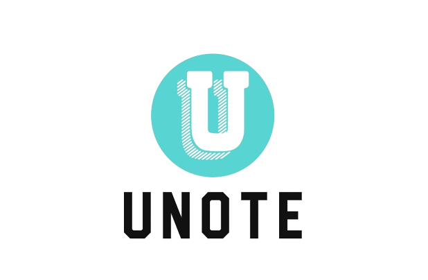

Unote
Terminos y condiciones
Esta red social se compromete a seguir las leyes actuales que corresponden con la protección de datos, esto con llevo proteger la privacidad y la seguridad de la información de sus usuarios. A continuación, concretamos los términos y condiciones de la política:
-
Recopilacion de información:
Unote recopila únicamente la dirección electrónica de los usuarios para el funcionamiento de esta, que son entregadas de manera voluntaria.
-
Uso de la información:
Los datos almacenados, los correos electrónicos, podrán ser enviados a comunicaciones periódicas relacionadas con el contenido, los servicios o las actualizaciones de la pagina web. No se compartirá los datos a terceros sin el consentimiento, a excepción de la ley lo requiera.
-
Seguridad de la información:
Se implementaron los protocolos pertinentes para preservar la seguridad de los datos, evitando cambios, adquisiciones y eliminaciones no autorizados. No obstante, no se garantiza la seguridad total de los datos.
-
Cookies y tecnologías de seguimiento::
Unote puede utilizar cookies u otras tecnologías de seguimiento para dar una mejorar experiencia. Estas tecnologías no pueden recolectar datos reconocibles sobre los usuarios. Además, que el usuario puede eliminar dichas tecnologías.
-
Enlaces a otros sitios web:
Unote puede contener enlaces a paginas de terceros, sin embargo, no somos responsables de las políticas de privacidad de dichas páginas.
-
Derechos de los usuarios:
Al registrarse y dar el correo electrónico, también da el consentimiento del procesamiento de la información.
-
Cambios en la política de privacidad:
Tenemos la libertad de actualizar la política de privacidad, pero ante cualquier cambio notorio serán avisados
alguna pregunta o inquietud sobre esta política de privacidad, no dude en ponerse en contacto con nosotros a través de la información proporcionada en el sitio web.
Última actualización:10/05/2024
UNOTE
jesco@myuax.com
Este documento constituye una declaración legal vinculante y puede ser utilizado para garantizar la transparencia y la protección de los derechos de los usuarios.